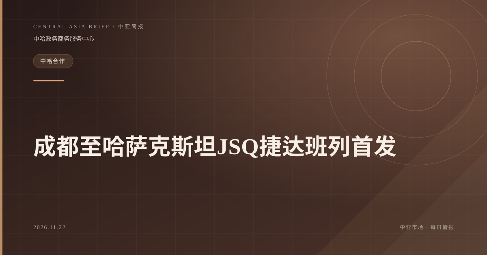

中亚（中国·成都—哈萨克斯坦）JSQ捷达班列首发，叠加哈方「人民建设」计划与上合教育论坛，中哈合作在物流、基建与人才三条线上同步推进。

今日要点
成都JSQ班列首发
中亚（中国·成都—哈萨克斯坦）JSQ捷达班列实现首发[34]。该班列以JSQ车型组织，指向成都与哈萨克斯坦之间的铁路运输通道，为相关货物提供新的班列产品。来源未披露班列频次、载重、货类结构与运行时刻等细节，实际运营安排需以铁路运营方与海关最新公告为准[34]。
从合作层级看，这属于地方（成都）对哈的物流通道型合作，与政府间协议不同，落地节奏取决于货源组织与口岸衔接。企业若计划使用该通道，应提前与班列运营平台确认舱位、箱型与报关流程[34]。
哈方「人民建设」计划
哈萨克斯坦总统托卡耶夫宣布大规模「人民建设」计划，称该计划将改变哈萨克斯坦的面貌，并创造新的就业岗位[10][21]。哈方通稿强调该计划的影响将惠及每一位哈萨克斯坦公民[10][21]。
同一来源体系下，托卡耶夫另强调哈萨克斯坦近年来取得的社会经济成果[32]。上述两项表态均属哈方国内政策与政绩表述，来源未给出「人民建设」的具体项目清单、投资规模、招标方式与外资参与规则，相关合规信息须以哈方官方最新规定和专业顾问意见为准[10][21][32]。
上合框架下教育对接
上合组织副秘书长出席哈萨克斯坦高等教育战略伙伴国际论坛[27]。该活动属上合组织框架下的人员往来与教育合作范畴，与中哈双边经贸合作形成配套。来源未披露论坛达成的具体协议、参与院校名单或合作项目，企业如涉及属地人才培养，宜以哈方教育主管部门与院校的正式信息为准[27]。
此外，哈萨克斯坦一座几乎零废弃的玉米加工厂投产[30]。该厂属哈境内农产品加工产能，来源未说明投资方国别与中方参与情况，不宜直接归入中哈产能合作项目，仅可作为哈方农产品深加工产能扩张的观察点[30]。
对企业意味着什么
- 判断：成都—哈萨克斯坦JSQ班列首发为汽车、工程机械等轮式货物提供新选项，建议有对哈出货计划的企业尽快向班列平台询价并锁定试运舱位[34]。
- 判断：哈方「人民建设」计划的具体项目清单与招标规则尚未在来源中披露，建议企业持续跟踪哈方官方发布，暂不据此做投资承诺[10][21]。
- 判断：上合教育论坛显示人才与培训合作通道在扩展，涉及属地用工的企业可提前对接哈方院校，但劳动用工与许可事项须以官方规定和专业顾问意见为准[27]。
- 判断：玉米加工厂投产反映哈方农产品深加工产能增加，相关设备、包装与物流需求可能随之出现，但来源未确认中方参与，宜先核实投资方背景再跟进[30]。
信息来源
- [10] Tengrinews · English — “Every Kazakhstani will feel the effect of ‘People’s Construction’“ - Tokayev on the new program · 2026.11.20
- [21] Tengrinews — “Эффект “Народной стройки“ ощутит каждый казахстанец“ - Токаев о новой программе · 2026.11.20
- [27] sectsco.org — 上合组织副秘书长出席哈萨克斯坦高等教育战略伙伴国际论坛 · 2026.11.20
- [30] TV BRICS — 哈萨克斯坦一座几乎零废弃的玉米加工厂投产 · 2026.11.19
- [32] Tengrinews · English — “Kazakhstan has achieved impressive results”: Tokayev highlights recent socio-economic achievements · 2026.11.19
- [34] 中国新闻网 — 中亚（中国·成都—哈萨克斯坦）JSQ捷达班列首发 · 2026.11.19
本文由中哈政务商务服务中心编辑部基于公开来源整理，引用编号对应文末信息来源；仅作一般性信息参考，不构成法律、税务或投资建议。 涉及具体政策、费率与许可要求，请以哈萨克斯坦官方最新规定及持牌专业机构意见为准。